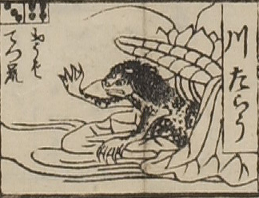

河太郎；カワタロウ

河太郎。獣のような顔をして、髪をざんばらにしている。頭頂が一部禿げているように見える。体に斑点があり、手指の爪が鋭い。
出典：親書誌：U426_nichibunken_0082：新版妖怪飛巡雙六；シンパンヨウカイトビマハリスゴロク／日付：2007／資源識別子：U426_nichibunken_0082_0007_0000
Copyright (c)2010- International Research Center for Japanese Studies, Kyoto, Japan. All rights reserved.